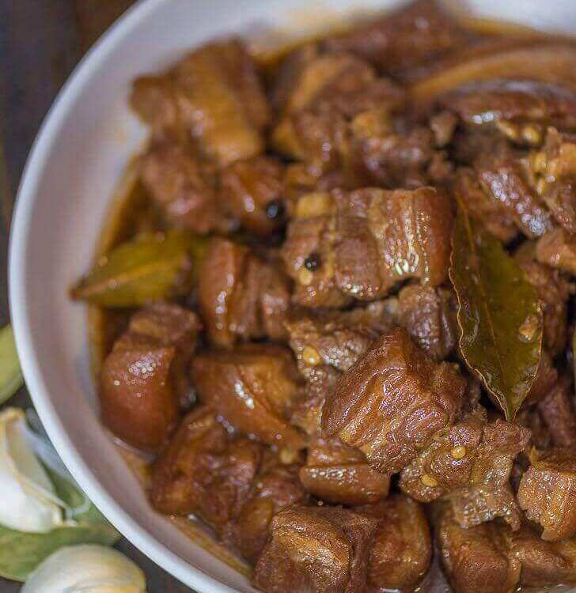

Pork Adobo

Description
Philippine adobo
(from Spanish adobar: "marinade," "sauce"
or "seasoning") is a popular Filipino dish and
cooking process in Philippine cuisine.
In its base form, meat, seafood, or vegetables
are first browned in oil,
and then marinated and simmered in vinegar,
salt and/or soy sauce, and garlic.
It has occasionally been considered the
unofficial national dish
in the Philippines.
Ingredients
- pork belly
- garlic
- dried bay leaves
- vinegar
- soy sauce
- peppercorn
- water
- salt
Steps
- Combine the pork belly, soy sauce,
and garlic then marinade for at least
1 hour
- Heat the pot and put-in the marinated
pork belly then cook for a few
minutes
- Pour remaining marinade including
garlic.
- Add water, whole pepper corn, and
dried bay leaves then bring to a boil.
Simmer for 40 minutes to 1 hour
- Put-in the vinegar and simmer for
12 to 15 minutes
- Add salt to taste
- Serve hot. Share and enjoy!